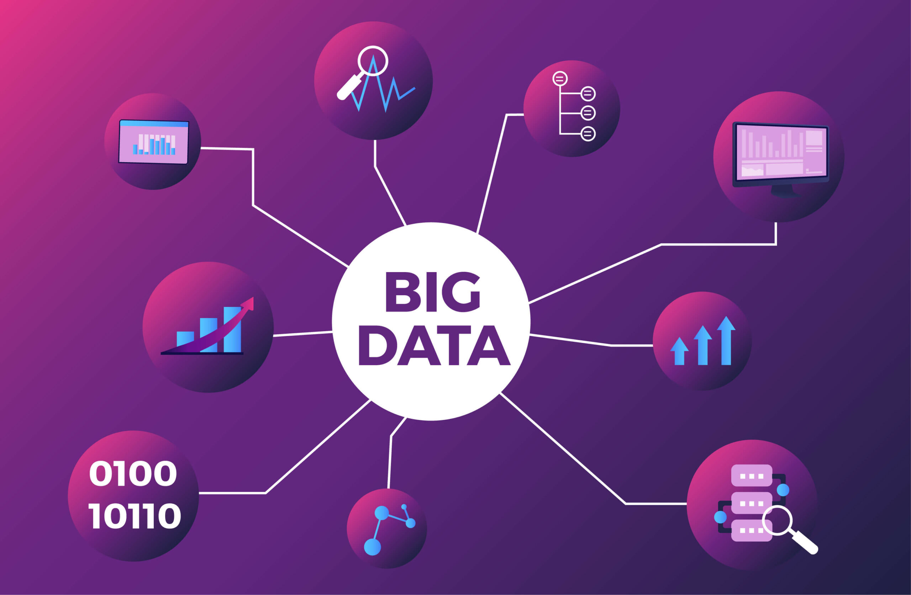
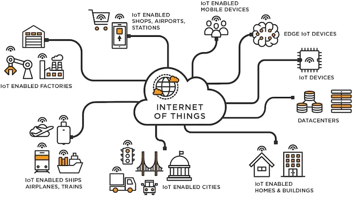

Exposé sur les Données en SNT
Illyan Abdeddine


Qu'est-ce Les données en snt
Les données sont omniprésentes dans notre monde numérique actuel. Elles sont au cœur de la technologie que nous utilisons au quotidien, que ce soit pour envoyer un message, consulter une page web ou encore pour le fonctionnement des objets connectés. En SNT (Sciences Numériques et Technologie), l'étude des données est essentielle pour comprendre comment l'information est collectée, stockée, traitée et exploitée. Cela permet aux élèves de découvrir le rôle des données dans notre société moderne et d'acquérir des compétences clés dans le domaine du numérique. Ce voyage changea malheureusement la vision que Shinjii et son ami avaient de l’inconnu...
/>Les données structurées sont organisées dans un format prédéfini, ce qui permet une compréhension et une analyse facilitées par des systèmes informatiques. Ces données sont souvent stockées sous forme de tableaux, bases de données relationnelles, ou feuilles de calcul, où chaque colonne représente un attribut spécifique et chaque ligne une entrée individuelle. L'un des principaux avantages des données structurées est leur interopérabilité avec des langages comme SQL, facilitant la recherche et la manipulation des informations. Par exemple, une entreprise peut utiliser une base de données structurée pour organiser les informations sur ses clients, leurs achats et leurs préférences. Cela permet de générer rapidement des rapports ou des analyses détaillées.

"Les données structurées sont la clé des systèmes d'information modernes, offrant une base solide pour l'analyse des données.""
— Smith et al., 2021.

Les données non structurées ne suivent pas de modèle prédéfini, rendant leur analyse beaucoup plus complexe. Ce type de données inclut les documents texte, les fichiers vidéo, les messages sur les réseaux sociaux, les e-mails, et les images. Le traitement de ces données requiert l’utilisation de techniques d'intelligence artificielle, comme le traitement du langage naturel (NLP) pour les textes ou la vision par ordinateur pour les images. Ces techniques permettent de dériver du sens ou de la valeur des informations cachées dans ces formats non structurés. Par exemple, l’analyse des commentaires des utilisateurs sur des plateformes en ligne peut aider une entreprise à mieux comprendre les besoins de ses clients.

"Les données non structurées représentent la majorité des informations créées dans le monde aujourd'hui, et leur analyse est cruciale pour révéler des perspectives cachées.""
— Jones & Patel, 2019.
III-"Les données semi-structurées."
Les données semi-structurées sont un compromis entre les données structurées et non structurées. Elles contiennent des éléments définis par une structure formelle, mais aussi des données libres qui n’adhèrent pas strictement à ce format. Les fichiers XML et JSON en sont des exemples courants, combinant des balises ou des paires clé-valeur avec des données plus fluides. Ce type de données est fréquemment utilisé dans les échanges entre systèmes hétérogènes, comme dans les API (Interfaces de Programmation d’Applications) où les informations doivent être compréhensibles par différentes machines sans être totalement rigides. Cela permet une plus grande flexibilité tout en assurant une certaine organisation.
"Les données semi-structurées offrent une flexibilité nécessaire dans les environnements complexes, tout en conservant une certaine structure essentielle à l'échange d'informations."
— Garcia et al., 2020.
Big Data :
Le Big Data désigne l'ensemble des données massives, en volume, en vélocité et en variété, qui dépassent la capacité des outils de gestion traditionnels à les traiter de manière efficace. Ces données proviennent de sources multiples, telles que les réseaux sociaux, les transactions en ligne, les appareils IoT, et sont souvent générées en temps réel. Analyser de telles données nécessite des technologies comme Hadoop, Spark, et des méthodes avancées comme le Machine Learning. Le Big Data permet aux entreprises et aux gouvernements de prendre des décisions basées sur des faits plutôt que sur des intuitions, en exploitant les tendances cachées dans ces vastes ensembles de données.

IoT (Internet des Objets):
L'Internet des Objets (IoT) représente un écosystème d'appareils physiques connectés à Internet, capables de collecter, échanger et traiter des données en temps réel. Les objets connectés peuvent aller des appareils portables comme les montres intelligentes aux capteurs installés dans les villes intelligentes. Chaque dispositif produit continuellement des données, qui sont ensuite analysées pour optimiser des processus ou améliorer des services. Par exemple, dans les usines intelligentes, les capteurs IoT peuvent suivre en temps réel l'efficacité des machines, permettant d'anticiper les pannes ou d'améliorer la production.
Intelligence Artificielle (IA) :
'intelligence artificielle exploite la puissance des données pour créer des systèmes capables d'apprendre, de s'adapter et de prendre des décisions de manière autonome. Les algorithmes d'IA, comme l'apprentissage machine et l'apprentissage profond, permettent aux machines d'analyser des volumes massifs de données, de repérer des modèles, et d'en déduire des conclusions qui améliorent leurs performances au fil du temps. Des applications concrètes incluent la reconnaissance vocale, la conduite autonome, la médecine prédictive et l’optimisation des processus industriels. Grâce à l'IA, les entreprises peuvent automatiser des tâches complexes et améliorer l'efficacité de leurs opérations.

Collecte des données
Traitement des données
Stockage des données
Le Katon est la nature de chakra phare du clan Uchiha, et Shinjii n'est pas différent sur ce point-là. Il maîtrise le Katon comme la plupart des membres de son clan, et il sera capable de créer des murs de feu dès son plus jeune âge.
Shinjii maîtrise également le Hyoton, l'art de manipuler la glace, qui combine le Suiton et le Futon. Cela lui permet de mélanger le feu du Katon avec la glace de son Hyoton pour déstabiliser ses adversaires.
Les membres du clan Uchiha sont généralement décrits par une même caractéristique : leur don héréditaire, un des dôjutsus les plus redoutés du monde Shinobi, le Sharingan. Shinjii n'échappe pas à la règle, et ce pouvoir hérité coule également dans ses veines, convoité par beaucoup.
-Analyse :
Examen des données pour identifier des tendances et améliorer les processus.
-Prévision :
Estimation des événements futurs à partir de données passées pour anticiper la demande.
-Décision :
Utilisation des analyses pour prendre des décisions éclairées et réduire les risques.
-Personnalisation :
Ajustement des offres et recommandations basés sur les préférences individuelles des clients.
-Sécurité :
Détection des comportements suspects pour prévenir les cyberattaques et protéger les données.
Merci de m'avoir écouté !